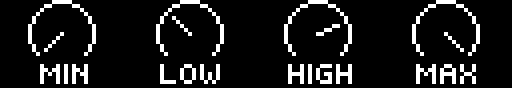
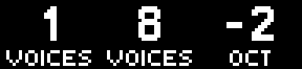
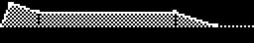
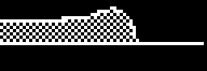
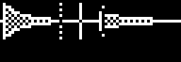
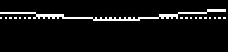
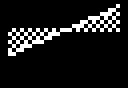
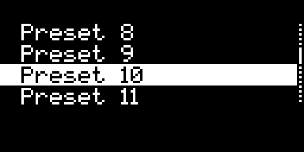

Manual
How Schwung works on your Move — concepts, shortcuts, signal chain, routing, recording, and the limitations worth knowing.
Already installed? Open Schwung Manager. Need to install? See the Install page.
1 · Concepts
Schwung adds an unofficial UI and audio layer that runs alongside stock Move firmware. Move keeps working normally; Schwung opens it up.
Four ideas are worth getting clear before anything else:
- Shadow UI — a parallel UI you summon with a gesture. Stock Move stays running underneath; you switch back by exiting Shadow.
- Slots — four instrument slots (one per Move track) plus a Master FX slot. Each slot is a self-contained signal chain.
- Modules — the synths, audio FX, and MIDI FX that load into a slot. Modules are installed from Schwung Manager in your browser, or from the desktop installer; the catalog is community-maintained.
- Overtake modules — full-screen tools (e.g. RNBO Runner, MIDI controllers) that take over Move's display and pads instead of running in a slot.
Important. Schwung is unofficial software that modifies your Move. Back up sets and samples before installing, and read up on DFU restore mode on Centercode in case you need to recover. Move itself is not damaged by Schwung — uninstall and DFU restore both return you to stock.
2 · Getting around
There are two ways to open Shadow UI: a long-press of certain buttons, or a chord with the Shift button while touching the volume knob. Pick whichever feels less accidental — or use both. Configure under Global Settings → Shortcuts → Open With (Hold, Sh+Vol, or Both, default). Shortcuts marked — are only available via the listed gesture.
Tracks & Master FX
| Action | Long-press | Shift+Vol |
|---|---|---|
| Open slot editor | Hold Track 1–4 (500 ms) | Shift+Vol + Track 1–4 |
| Back to that Move track | Hold Track 1–4 (500 ms) again | — |
| Open Master FX | Hold Note/Session (500 ms) | Shift+Vol + Note/Session |
| Switch to another slot | Tap Track 1–4 | |
| Dismiss Shadow UI | Tap Note/Session | — |
| Dismiss Shadow UI (always) | Shift + Track 1–4 | |
| Toggle module bypass | Mute + Jog Click on a focused chain or Master FX module | |
| Toggle slot mute | Mute + Track 1–4 | |
| Toggle slot solo | Shift + Mute + Track 1–4 | |
Holding a Track button goes both ways. From Move it opens that slot's editor; from the Shadow UI it hands the screen back to Move on that track. It is its own reverse, so you can hold your way back and forth between the two without learning a second gesture — and because the track follows, the pads you land on are the ones the editor was about.
Keep Schwung. Tapping a Track button switches to that slot's editor and keeps you in Schwung — a track button selects a track, the same as everywhere else on the hardware. If you would rather it hand the screen straight back to Move, turn off Global Settings → Display → Keep Schwung. Either way Shift + Track hands the screen back, and Note/Session always dismisses, so there is more than one way out.
Module bypass skips one module without removing it. Audio FX pass through dry, MIDI FX become passthrough, and a bypassed synth goes silent while still consuming MIDI so downstream FX tails ring out and unbypass is clean. A small B appears above the module's box (same style as the LFO ~ marker). Bypass state is preserved across reboot (via per-slot autosave); loading a patch from the library starts unbypassed. Mute always reaches Move, even while the Shadow UI is shown, so Move's own Mute+pad drum muting keeps working. The trade-off: a plain Mute tap also toggles Move's selected track, and Mute+Track mutes both the Schwung slot and the Move track.
Tools, settings & sets
| Action | Long-press | Shift+Vol |
|---|---|---|
| Open Global Settings | Shift + hold Step 2 | Shift+Vol + Step 2 |
| Open Tools menu | Shift + Step 13 | Shift+Vol + Step 13 |
| Open Quantized Sampler | Shift + Sample | |
| Skipback (save last 30 s) | Shift + Capture | |
| Switch Set Page (when enabled) | — | Shift+Vol + ←/→ |
Global Settings is seven pages on one jog axis — Display, Audio, Screen Reader, Set Pages, Shortcuts, Services and Updates. Jog between them, click to enter one, then jog to a row and click to change it. Shift + jog-click opens the section picker from anywhere. Updates is a menu rather than a list of settings: Check Updates, Module Store and Help.
It is always drawn as a list, whatever Param View is set to. These are set-once switches rather than things you play, and several of them re-route audio — a knob has no detent to tell you it moved.
Overtake modules
| Action | Long-press | Shift+Vol |
|---|---|---|
| Open Overtake menu / exit Overtake | — | Shift+Vol + Jog Click |
| Suspend Overtake (keep running) | — | Shift+Vol + Back |
Param View
When you open a module's parameters, Schwung shows a knob grid: eight cells laid out like the hardware, each drawn as the control it actually is — a dial, a fader, an envelope, a switch — and paged with the jog wheel. Touching a knob raises a card showing that row up close. Any parameter with a list of options opens that list on a jog-click, so a 47-model oscillator is a scrolling list rather than 47 detents. A parameter with only two values has nothing to browse, so there the click simply switches it — the footer says CLK FLIP instead of CLK OPEN. In List view the same parameter is focused instead, and the jog changes it, like every other row. How a two-value control turns follows how it is drawn. A switch has a track with its knob at one end, so it points a direction and turns like one: clockwise is on, anticlockwise is off, and turning one that is already on simply leaves it on. A two-value choice — Mix/Reverb, Saw/Square — is drawn as a boxed value instead, with both options in the same place and no direction implied, so there a turn switches it whichever way you went, and one flick of the encoder is one change.
You never choose these — a module declares what a parameter is, and the right control follows.


Where several knobs describe one thing, Schwung draws the thing instead of the knobs, across the cells they occupy.





The gestures are the same on every page of every module.

And the furniture around them.
Four of them move when their value changes, so a change is visible rather than just present. (Slowed 5× here — on the device these take a fraction of a second.)
Module authors: the full reference — every widget, the page chrome, and the rule that selects each one — is in MODULES.md.
The eight encoder rings light up to show which physical knob drives which drawn cell — knobs 1–4 white, knobs 5–8 amber, each getting brighter as its value rises. A ring that stays dark is a knob with nothing behind it: turning it will do nothing. Leaving the grid hands the rings back to Move.
Turn a parameter that has a list of options and the list appears on its own while you turn, so you can see what is coming without clicking in. It disappears a moment after you stop; Back closes it early. Nothing is being chosen here — the turn has already made the change — so there is no confirmation and nothing to cancel.
Some parameters are buttons rather than values — Clear, Randomise, Recover Loop. They draw as a push button and do nothing until you fire them. Click the jog to fire, or just turn the knob, either way. A whole flick of the encoder counts as one press however far you spin it — it only re-arms once the knob has been still for a moment — so you cannot randomise a kit a dozen times by accident.
Where a module loads a sample, the cell draws that file's actual waveform, with the play position cut into it and any loop points bracketed. Granular modules show their spray as a fenced region around the position. When several controls belong to one sample, Schwung seats them side by side and draws a single wider picture across them rather than a row of unrelated dials — and a click anywhere in that picture opens the full-screen wave editor, which shows the same spray fences. The file itself stays a separate cell showing the loaded filename, or NONE when nothing is loaded; clicking it opens the file browser rather than the wave editor. With no sample loaded there is no waveform at all — those cells simply draw as the controls they are, rather than as an empty frame.
Set Global Settings → Display → Param View to List and the same pages are drawn as rows instead — one parameter per line, name and value, five at a time. It is the better choice for a module that publishes no page structure, where the grid can only paginate a flat list, and for reading long values that a knob cell has to abbreviate. Everything else is identical: the same pages in the same order, the same sections, the same jog-click, the same option lists. If you previously set this to List, your choice is kept.
Getting around a page
Every parameter screen — a module's pages, slot settings, Master FX settings, Global Settings — is navigated the same way:
- Jog moves between pages.
- Jog-click enters the page you are on. On a list you then get a row cursor: jog to a row, click to change it, Back to step back out.
- Shift + jog-click opens the section picker from anywhere, so a module with a lot of pages is one gesture away from any of them.
- Back comes out one layer at a time — the picker, then the page, then the screen.
Preset browsers and option lists are doors: paging past one does not load anything, so you can jog through a synth's presets without auditioning every one. Clicking in is what commits you.
Any list longer than the screen shows a scrollbar down the right edge. The block on it is sized to how much of the list you can see and sits where you are in it — so a long list looks long, and you can tell at a glance whether you are near the top or most of the way down. Lists that fit the screen show nothing.
Knob overlay
The knob parameter overlay shown in native Move mode has its own trigger setting under Global Settings → Display → Overlay: Shift, Jog, Off, or Native (default). Switch this to +Jog Touch or Off if Move's stock Shift+Knob actions (like fine control) are getting blocked.
MIDI channel indicator
A small readout in the bottom-right corner shows the external (USB) MIDI channel while you hold a note: i<ch> for the channel a connected controller is sending in, and i<ch> o<ch> when Schwung forwards that note back out (after any MIDI FX or channel remap). Enable under Global Settings → Display → Show MIDI. It monitors your external-gear routing — clip/track MIDI-out isn't shown.
3 · Schwung Manager (web)
Most day-to-day management lives in the web UI rather than on Move's display. Open http://move.local:7700 from any browser on the same network while Move is on.
- Modules — browse, install, uninstall, update modules. Install custom modules from a GitHub URL or tarball.
- Files — browse, upload, download, rename, delete files on the device. Useful for managing module assets (soundfonts, patches, ROMs). Fully keyboard- and screen-reader-accessible: Tab between rows, Enter opens a folder (or downloads a file), Space selects, and each row announces its name; a checkbox column handles multi-select.
- Remote UI — control a slot's module from your browser. Some modules include their own interface (e.g. Osirus's signal-flow view); it loads here next to the standard knob controls, and you can switch between the two for each slot.
- Config — adjust display, audio, screen reader, and feature settings. Changes apply instantly.
- System — version, debug logs, upgrade Schwung. If a core component (the audio shim) is left out of date by an update — which can stop modules from loading — a repair banner appears here with a one-click fix (see FAQs).
- Help — on-device help for Schwung and installed modules.
- Screen Mirroring — quick access at
move.local:7700/mirror.
No authentication. Schwung Manager has no password — anyone on the network can access it. Settings sync between web UI and device in real time. move.local:80 remains the stock Move manager, untouched by Schwung.
Display Mirror
Streams Move's 128×64 OLED to any browser at ~30 fps — both stock Move UI and Shadow UI. Off by default. Toggle on at Global Settings → Display → Mirror Display, then open move.local:7700/mirror (or move.local:7681). Up to 8 simultaneous viewers. Setting persists across reboots.
4 · Slots & signal chain
Each instrument slot holds a signal chain you build:
MIDI FX ×1–8 → Sound Generator → Audio FX ×1–8 → Settings
The synth is anchored in the middle; everything either side of it is a list you can grow, shorten and reorder. MIDI FX chain serially, so an arpeggiator can feed a second arpeggiator.
Inside a slot:
- Jog wheel — scroll between chain positions.
- Jog click — enter the selected position; on an empty position, opens the module picker.
- Back — go up one level.
- Shift + Jog click on a loaded module — swap it out without clearing the slot first.
- Shift + Jog wheel — move the selected module along the chain.
- The two + boxes add a module where they are drawn — the MIDI one at the head of the chain, the audio one at the end. Backing out of the picker, or choosing None, adds nothing.
Editing the chain never restarts what is already in it. Adding, removing or moving a module leaves every other module running untouched — a running arpeggiator keeps its phase, a reverb keeps its tail, and nothing loses the parameters you dialled in. Swapping a module out with Shift + Jog click does replace it, so that one starts fresh.
Most modules expose a preset browser (jog to scroll, click to select), a parameter menu organized hierarchically, and assignments for knobs 1–8.
Knobs
Touch or turn a knob in the chain editor and a card appears over the chain showing that knob together with its three neighbours — each with its name, its value, and the dial, switch or curve it actually drives. The knob you are holding is highlighted, and its full parameter name and value sit along the top of the card. Let go and the chain diagram is back.
With no module selected — the whole slot highlighted — the knobs drive the slot's own eight assignments, and the card shows just the name and value for the one you are turning.
A knob that picks from a list — a filter mode, an arpeggiator division, a receive channel — can show you the whole list instead of stepping through it one click at a time. Hold the knob and press the Jog click: the options appear as a scrollable list with the current one marked, jog to move through them, click to set, Back to leave it exactly as it was. The knob still steps the value in place if that is quicker. The same list opens from a parameter menu by clicking one of these settings.
Turning one of these knobs also flashes the list up briefly, so you can see what sits either side of the value you just set. Two things do not do this, because the cell already tells you: a switch — an on/off toggle — draws both of its states at once, and a parameter drawn as a wide picture, like a filter curve, redraws that picture as you turn. A knob choosing between two things that are not on and off, such as Mix or Reverb, is not a switch and does show its list.
Component actions
Jog past the last knob page of any loaded module — synth, MIDI FX or audio FX — and two more pages appear, so Save and Remove are always one jog-turn away without opening the module picker first:
- User Presets — the top row shows the preset currently loaded ((none) if none, or its name with a leading * once the sound has changed since it was loaded), and clicking that row opens the preset list to choose from. Below it are Save and Delete (only shown once a preset is loaded), and Save As.
- Module — Module Help opens that module's own help pages, and appears only for modules that ship help; Add to List files the module into Favorites or a list of your own; Swap Module opens the same picker as Shift + Jog click; Remove Module clears the position and closes the gap, same as picking None from that picker.
Both pages are lists: jog to an entry, click to run it. Jogging past one does nothing on its own — nothing fires until you click in.
Module Help is the same help pages you would reach through Global Settings → Help → Modules, opened straight at the module you are editing. Back from the top of them returns you to the module, not up into the rest of the help.
Every module built into Schwung now ships help — Signal Chain itself, Chord, Arpeggiator, Freeverb, Line In, Velocity Scale, RNBO Runner, and the File Browser and Song Mode tools. Modules you install from the store are up to their authors, so the row appears for some and not others; if a module you use has no help, that is worth raising with whoever wrote it.
Module lists
Add to List is how you cut a long picker down to the handful of modules you actually reach for. It shows every list you have, with a mark against the ones this module is already in; clicking a list adds or removes it, and the change is saved straight away. Favorites is there from the start. New List… opens the on-screen keyboard to name another.
Edit Lists… manages the lists themselves — pick one to Rename, Delete or Clear it. Favorites can be cleared but not renamed or deleted, so those two rows simply are not offered for it.
The payoff is in Swap Module: its top row now reads List, and clicking it cycles through All and each of your lists, showing only the modules in the one you land on. Lists are shared across the whole device rather than kept per position, so a picker only offers lists that actually contain something it could load — an effects-only list never comes up when you are choosing a synth. The choice sticks as you move between positions, and if you open a picker where it would show nothing, it drops back to All and tells you it has. None, the move rows and [Get more…] are always there whatever list you are on.
Slot settings
The last position in each slot is its settings page:
| Setting | Description |
|---|---|
| Knob 1–8 | Assign any module parameter to a knob. Works in normal Move mode too — hold Shift and turn the knob. |
| Volume | Slot volume. |
| Receive Ch | MIDI channel the slot listens on. Match this to the Move track's MIDI Out. |
| Forward Ch | MIDI channel sent to the synth module — see deep-dive below. |
| MIDI FX | Schw (default) or Schw+Move — where the slot's MIDI FX output lands. |
| LFO 1 / LFO 2 | Per-slot modulation, see §6. |
Slot presets
- Save / Save As — saves the entire slot configuration: every loaded module plus its settings.
- Load — scroll left to the slot overview, click to see saved presets.
- Delete — removes a saved preset.
Presets and per-Set state are not the same thing. Loading a preset copies it into the current Set; tweaks afterwards live in the Set, not the preset. See §10.
Module presets (User Presets)
Where a slot preset saves the whole chain, a module preset saves the sound of just one module — a single synth or effect — so you can reuse it anywhere. They live on the module's own My Presets page — jog to the end of that module's knob pages and it is the second-to-last one, right before Module. (Earlier versions also put a [User Presets] row in the module picker; that row is gone, since My Presets sits beside the module's own controls.)
- Save — stores the module's current sound under a name.
- Audition — off by default. Turn it on under Global Settings → Audition and scrolling the list plays each preset live so you hear it before choosing; Back returns to your original sound and Load keeps the highlighted one. With it off, the list still works — a preset simply loads when you pick it.
- Portable — presets follow the module, not the slot, so a reverb preset you save in one slot shows up wherever that reverb is loaded.
5 · MIDI routing
To play a Schwung synth, send it MIDI from a Move track:
- On the Move track, set MIDI Out to a channel (1–4).
- On the matching Schwung slot, set Receive Ch to the same number (usually auto-set).
- Play the Move track — its notes trigger the slot's synth.
Pitch bend, mod wheel, sustain, and other CCs from external controllers are forwarded too.
Knob automation over MIDI. An external controller can drive a chain slot's eight knob parameters directly: CC 71–78 act as relative encoders (endless-knob deltas), and CC 102–109 act as absolute values (0–127 scaled across each parameter's range). Both target the same eight knob mappings as the on-screen knobs, so either kind of controller works.
Stop the native synth doubling. Load an empty Drum Rack or Sampler preset on the Move track. The track still sends MIDI but its own sound is silenced.
MIDI clock. Some modules (e.g. Arp) need MIDI clock for tempo sync. Set Move's MIDI Clock to Out so they pick it up.
Forward Channel modes (Auto / Thru / 1–16)
- Auto (default) — remaps incoming MIDI to the slot's Receive Ch. If Receive Ch is set to All, MIDI passes through unchanged.
- Thru — passes the original MIDI channel through unchanged. Useful for multitimbral synths that respond differently per channel.
- 1–16 — forces all MIDI to a specific channel regardless of what was received.
MIDI FX output: Schw vs Schw+Move
Schw (default) — the slot's MIDI FX output goes only to the slot synth. Move's native track instrument keeps playing whatever you played on the pad.
Schw+Move — the MIDI FX output is also injected back into Move's MIDI input on the slot's forward channel, so Move's native track instrument plays the transformed stream in addition to the slot synth.
Best use: a Chord MIDI FX. Hold one pad — Move plays the root, while the chord's harmony notes also play on Move's native track.
Limitation. A generator-style MIDI FX (e.g. Arp) emitting the same pitch you're holding on the pad won't retrigger that pitch on Move — its pattern is silent on Move for a single-pad hold. This is a technical limitation of telling our injected echoes apart from your pad release on the same note. Chord works because it emits harmony pitches that are distinct from the pad's note.
6 · LFOs
Each slot has two independent LFOs. Each one can modulate any parameter of any module in the slot's chain — synth, audio FX, MIDI FX — or each other.
| Setting | Options |
|---|---|
| Target | Component + parameter to modulate. See Choosing a target below. |
| Enabled | On / Off. |
| Shape | Sine, Tri, Saw, Square, S&H, Swishy (smooth random walk). |
| Sync | Free-running (Hz) or tempo-synced (16 bars to 1/32T, including triplets). |
| Depth | −100% to +100%. Negative depth inverts the shape. |
| Polarity | Unipolar (0 to depth) or Bipolar (-depth to +depth). |
| Phase | 0–360°. |
| Retrigger | Reset phase on the first note-on of a new phrase. |
An indicator (~1, ~2, or ~1+2) appears above any component being targeted by an LFO. LFOs can also target each other's depth, rate, or phase for compound modulation. Master FX has its own pair of LFOs that operate on the master chain.
Choosing a target
Picking Target asks for the component first, then the parameter. For a module with a lot of parameters, the parameter step is split into the same sections the module's knob pages use — Filter, Amp, Tone1/Wave and so on — with the number of parameters in each shown on the right. Anything the module does not file under a section appears under Other, so nothing is ever hidden by the grouping.
Small modules skip the section step and go straight to the parameter list, as before.
Re-opening the picker for an LFO that already has a target lands on that target — the right component, the right section, the right parameter — instead of at the top of the list.
7 · Master FX
Open with Shift+Vol + Note/Session (or long-press Note/Session). Master FX is a chain of up to eight audio effect slots that processes the mixed output of all four instrument slots. The row scrolls to follow your selection, the same way a slot's own chain does, so the chain can be longer than the screen.
Master FX has its own pair of LFOs (LFO 1 and LFO 2 in the Master FX menu) that target any parameter of the loaded master effects.
8 · Routing Move audio (Link Audio)
By default, Schwung synths run in parallel to Move and are mixed in. To run Move's own track audio through Schwung effects (e.g. CloudSeed reverb on a Move drum kit), enable Link Audio. Requires Move firmware 2.0.0+; off by default.
- On Move: Settings → Link → toggle on.
- Install or update Schwung — the installer enables Link Audio support.
- In Schwung: Global Settings → Audio → toggle Move→Schwung on.
Each Move track is captured separately and routed through the matching slot's audio FX. A slot can have both a synth (triggered by MIDI) and audio FX (processing the Move track's audio) running at once.
Restart may be needed. If you don't hear Move tracks being processed after enabling routing, restart Move — the Link Audio subscriber sometimes needs a fresh boot to start capturing.
Tradeoffs: what changes when Link Audio is on
Schwung intercepts Move's per-track streams before the native mix, so it has to rebuild the mix itself. That changes the path:
- Move's native Master FX is bypassed when Link Audio is on. Schwung's Master FX still applies to the combined output.
- Pressing Play introduces a brief delay (Move syncs to the Link quantum).
With Link Audio off, Move's audio runs its normal path including native Master FX, then everything is summed into Schwung Master FX.
Latency Comp: aligning Schwung synths with Move audio
When Move→Schwung is on, Move's per-track audio takes a few milliseconds to round-trip back into Schwung through Link Audio. Schwung's own slot synths render instantly, so by default they fire a few ms ahead of any Move drumrack/synth hitting the same beat — a subtle flam if both sides are on the same downbeat.
Global Settings → Audio → Latency Comp (default off) delays Schwung's slot synth output by a constant ~16 ms and locks the Link Audio side to the same target, so both arrive on the same DAC sample. Toggle applies immediately; expect a brief audible blip at the moment of toggling (a delay buffer engaging or disengaging mid-stream).
Side effect: live playing through a Schwung slot adds ~16 ms of latency while Latency Comp is on. That target matches how long Move's own tracks actually take to arrive — aligning any tighter would starve the audio buffer and cause dropouts. Leave it off if you're not running Move→Schwung, or if tight live response matters more than aligning with Move tracks.
The metronome goes quiet under Move→Schwung — and how to get it back
With Move→Schwung on, Move's metronome stops being audible. This is not a fault you can configure away: Schwung rebuilds Move's output from the four per-track audio channels so it can put effects on each one, and Move mixes its click onto the master bus rather than into a track. The click simply is not in the audio Schwung receives.
So Schwung plays its own. Global Settings → Audio → Metronome:
- Off — no click.
- Follow (default) — clicks whenever Move's own metronome is on, so the Shift + Step 6 button you already use keeps working as the switch.
- On — clicks whenever the transport is running, whatever Move's metronome is set to.
Click Vol sets the level. The accent falls on beat 1, using the Set's time signature. In every mode the click is heard only while Move→Schwung is on — switch it off and you hear Move's own metronome again, so the two never double up.
The click is not recorded: resamples and Skipback captures stay clean.
One thing this does not cover — the one-bar count-in before recording. Move plays that even with the metronome off, and it is silent under Move→Schwung for the same reason, with nothing Schwung can detect to trigger a replacement.
Muting with Move→Schwung: tracks vs. drum pads
Hold Mute and tap a track button to mute that track — Move's track and the matching Schwung slot mute together and stay in sync. Tapping Mute on its own only mutes Move's selected track; the Schwung slot is unaffected.
Hold Mute and tap a single drum pad to mute just that one pad/drum, exactly like stock Move. This no longer mutes the whole Schwung slot — only the pad you press.
Speaker EQ: voicing the built-in speaker
When Move→Schwung is on, Schwung rebuilds the DAC output itself, which bypasses Move's built-in speaker voicing. Schwung re-applies its own emulation of that EQ so the internal speaker still sounds full — but only on the speaker path; headphones and line-out stay neutral.
This is fully automatic — it follows the headphone jack, so the speaker gets the voicing and headphones/line-out stay neutral. There's no setting to manage. (Earlier builds had a manual Auto/Off/On toggle as a workaround for occasional hollow/phasey headphone audio at boot; that bug is fixed — Schwung now re-asserts the true jack state a few seconds after startup — so the toggle was removed.)
9 · Recording & sampling
Sampling Schwung into Move (Resample)
Feed Schwung's audio into Move's native sampling path so you can capture a Schwung synth, Webstream, AirPlay, Radio Garden, or any other Schwung output straight into a drum pad or sampler clip — using all of Move's normal sampling tools (Auto-Sample, count-in, slicing, drum-pad capture).
Configure under Global Settings → Audio → Resample:
- Native (default) — Move's sampler uses Move's normal input (line-in / mic).
- Mix — replaces the sampler's input with Schwung's master output, so anything you can hear from Schwung becomes recordable on Move.
Recommended setup to avoid feedback while Mix is selected:
- Set Resample to Mix.
- In Move's native Sampler, set the source to Line In.
- Set monitoring to Off.
If monitoring is on, or routing is configured differently, audio feedback may occur.
Quantized Sampler
Open with Shift + Sample. Records Move's audio output (including Schwung synths) to WAV files, quantized to bars.
- Source — Resample (Move's mixed output incl. Schwung) or Move Input (whatever Move's sample input is set to: line-in, mic, etc.).
- Duration — Until stopped, 1, 2, 4, 8, or 16 bars.
- Open the sampler with Shift+Sample.
- Use the jog wheel to choose source and duration.
- Recording starts on the next note event or when you press Play.
- Press Sample to stop early — otherwise it stops at the chosen duration.
Files save to Samples/Schwung/Resampler/YYYY-MM-DD/. Bar timing uses MIDI clock when available, else project tempo. Move's count-in works for line-in recordings.
Skipback
Schwung continuously maintains a rolling audio buffer (30 s by default, up to 5 min). Press Shift+Capture to dump the buffer to disk instantly without interrupting playback — recover happy accidents you weren't recording.
Configure under Global Settings → Shortcuts: Skipback changes the shortcut to Vol+Cap if Shift+Capture conflicts; Skipback Len sets buffer size (30 s, 1 m, 2 m, 3 m, 4 m, 5 m). Resizing preserves whatever's currently in the buffer (oldest samples truncated when shrinking).
Files save to Samples/Schwung/Skipback/YYYY-MM-DD/ using the same source setting as the Quantized Sampler.
Snapshot & recall
Press Shift+Copy to take a snapshot of every parameter in all four slots and the whole Master FX chain. Tweak as much as you like, then press Shift+Delete to put it all back. It works whether or not the Schwung screen is showing.
The snapshot always means one thing: how this set was when you loaded it, or the last time you pressed Shift+Copy. Loading a set resets it, so you can always get back to where a set started even if you never took a snapshot yourself. There is one snapshot at a time, and it belongs to the set — switching sets gives you that set's, not the one you left behind.
Recall puts back settings, not the modules themselves. Anything still running keeps running, so reverb tails and arpeggiator timing carry straight through instead of cutting out. If you swapped a module out since the snapshot, that one is left alone and the toast tells you how many were skipped — for example “Snapshot restored / 2 skipped”. A handful of modules don't save their settings at all; those count as skipped too.
Recall Quantize. Under Global Settings → Shortcuts, Recall Q chooses when a recall actually happens: Off (immediately, the default), or on the next Beat, Bar or 2 Bars. Set one up mid-phrase and let it drop in time with what is playing. A Q appears in the top-right corner while a recall is waiting; press Shift+Delete again to call it off. With the transport stopped there is no clock to wait for, so the recall just happens straight away whatever the setting says.
Note: while Schwung is running, Shift+Copy and Shift+Delete belong to Schwung and no longer reach Move's own copy and delete.
Feedback protection
Speaker feedback risk. When you load a module that uses line input (Line In, AutoSample) while built-in speakers are active and no line-in cable is plugged in, Schwung warns you. Press Jog to proceed (e.g. recording with the internal mic and speakers turned down) or Back to cancel. Plug in headphones or a line-in cable to bypass the warning.
Continuous protection. Schwung watches for this risk at all times. Whenever the built-in speakers are active with no line-in cable plugged in, any slot using line input is automatically bypassed (you'll see the B bypass glyph on it) so it can't feed back — this happens at startup and the moment you unplug your headphones. A "Feedback Risk" notice appears (and is read aloud) telling you audio monitoring is disabled — plug in headphones (or a line-in cable) and the slot re-enables on its own, dismissing the notice. If you really want it live on the speakers anyway, press Jog to override (or un-bypass it yourself with Mute + Jog-click); Schwung won't keep re-bypassing it until the next time it's safe or you reboot.
USB-C audio out remembered
Move's Settings → USB-C Audio Out chooses what a computer connected over USB-C hears: the microphone, or Main Out. Move forgets this every time it powers off — it always comes back on Mic, so if you record Move into a computer you have to re-pick Main Out at the start of every session.
Schwung remembers it for you. Choose the setting once in Move's own menu, and a few seconds after each boot Schwung restores it. Nothing to configure, and nothing happens at all if you're on Mic — that's already Move's default.
Under Global Settings → Audio, USB-C turns the restoring on and off, and shows the source currently in use — e.g. On (Main Out). It is not a second Mic/Main Out switch: Move's own menu still chooses which one you want, and this only decides whether Schwung puts it back after a reboot.
There's a short gap after boot. Move starts on Mic, and Schwung switches it over a few seconds later once Move's firmware is up — you'll hear the mic briefly, then Main Out take over. If you're recording the Move from the moment it powers on, the first few seconds will be microphone audio.
Move's screen will still say "Mic". Move doesn't update its own display when the setting is restored, so the menu shows Mic while the computer is really receiving Main Out. The audio is correct — trust your ears, not the screen. If you open that menu, picking Main Out is harmless; picking Mic will genuinely switch it back to the microphone, even though it looks like you're changing nothing.
10 · Sets & pages
Per-Set slot state
Each Move Set carries its own independent slot configuration. Switching Sets saves the outgoing slots and restores the incoming Set's slots — synths, effects, knob assignments, Master FX, and (if RNBO Runner is active) the current RNBO graph and its parameters. Slot audio fades smoothly during the transition. A brief Set Loaded overlay confirms the switch.
- New Sets start with empty slots.
- Duplicated Sets (name contains "Copy") inherit the source Set's Schwung state automatically.
- To carry a configuration to a brand-new Set, save it as a slot preset first, then load it in the new Set.
Set Pages
Set Pages organize your sets into 8 switchable pages. Each page has its own independent collection of sets — group by project, genre, or live performance.
- Shift+Vol + ← / → — switch page. A toast shows Loading Page X/8…; Move restarts to load the new page's sets.
- Toggle off in Global Settings → Set Pages → Set Pages. Persists across reboots; takes effect immediately.
How it works: when switching pages, Schwung saves the current set if it has unsaved changes, stashes the current page's sets to a per-page folder, moves the target page's sets into Sets/, and restarts Move. Each set's slot state is preserved as usual.
11 · Tools menu
Open with Shift+Vol + Step 13. Tools are standalone utilities that run outside the slot system. Overtake modules also live here, below a divider.
File Browser
Browse files and folders on Move. Two starting roots: User Library (samples, presets, recordings) and System Files (the Schwung directory — shows a warning before entry).
- Jog scrolls; jog click opens a folder or shows file actions.
- Shift + Jog click shows actions for any item.
- Back goes up a level.
- File actions: Play (WAV), Duplicate, Rename, Delete, Copy to…, Move to…, New Folder.
- Selecting Play on a .wav previews it through Move's speakers with a progress bar; jog or back to stop.
Song Mode
Sequence clips from your set's clip layout into an ordered list of steps. Each step triggers all 4 tracks simultaneously, advancing automatically by bar timing.
Building a song. Select a step with the jog or step buttons; tap pads to assign a clip per track. The first pad press on an empty step copies the previous step, so you only change what differs. Shift+Pad on steps 2+ marks a track as continue (shown with a trailing quote ") so it won't retrigger and won't contribute to step length calculation.
Playback. Play starts from the current step; Shift+Play from the beginning; Play again stops (returning to where playback started). Loop wraps back to step 1 after the last step (shows [L]); disabled during recording.
Recording. Rec records audio from the current step; Shift+Rec from the beginning; Rec again stops. Auto-stops after a configurable tail (default 2 bars) to capture reverb/delay tails — change with the Tail menu item (jog click cycles 0, 1, 2, 4, 8 bars). Files save to Recordings/Song Mode/ with the set name in the filename.
Editing. Hold a step or jog click on it to edit its settings: Repeats (1, 2, 4, 8, 16, 32, 64), Bar Length (Longest, Shortest, or Custom). Step rows show duration as 4 or 4x2 (for repeats > 1). Copy duplicates a step; Delete removes one; Shift+Delete clears the song. Shift+↑/↓ reorders steps. Up to 20 levels of Undo.
Step LEDs: green = has content, red = now playing, white = selected. Pad LEDs highlight the current step's assigned clips in red. Songs save automatically per Set.
12 · Overtake modules
Overtake modules take full control of Move's display and controls. They live in the Tools menu below a divider — open Tools (Shift+Vol+Step 13) and select one.
The Shift+Vol combos in this section have no long-press equivalent, so they do nothing if Global Settings → Shortcuts → Open With is set to Hold. Leave it on Both (the default) or Sh+Vol to use them.
- Close: Shift+Vol + Jog Click, or Shift + Back.
- Suspend (leave it running in the background): Shift+Vol + Back.
- Back on its own suspends some modules and is handled by the module itself in others — it depends on the module. The two combos above behave the same way everywhere, so use those if you want to be sure.
- Resume: reopen Tools and select the module again, or jump straight back to the last suspended one with a double-tap of Shift+Vol + Step 13, or a long press of Shift + Step 13. Either way it picks up where it left off, LEDs restored.
Heads-up. After exiting an overtake module, Move's pad and button LEDs won't refresh automatically — change tracks or sets and they'll come back as they light back on.
RNBO Runner
Hosts RNBO for Move graphs as an overtake module, running on top of Move with full pad/knob control. Install RNBO for Move separately first (per Cycling '74 instructions), then open Tools and select RNBO Runner.
- Suspend/resume — Shift+Vol+Back suspends; reopen Tools and re-select to resume with LEDs restored, or use the Step 13 shortcuts above.
- MIDI from Move — RNBO receives Move sequencer MIDI on Channel 16. Sequence RNBO devices from Move, use MIDI capture, etc.
- Per-set state — current RNBO graph + parameter tweaks save automatically per Schwung set.
- Resampling and Skipback include RNBO audio.
- Master FX and Volume — RNBO routes through Schwung's master chain and master volume.
- Display mirroring works with RNBO Runner.
Schwung includes a JACK shadow driver (but not JACK itself — RNBO ships JACK). The driver is available if you want to build other JACK applications for Move.
13 · Accessibility
Schwung includes an optional screen reader that announces UI elements via text-to-speech. Move is, as far as we know, the first musical instrument with an on-device screen reader.
Toggle from Global Settings → Screen Reader, or by double-pressing Shift + Note/Session — which works whether or not the Shadow UI is enabled. A single press of the same combo does something else: it opens Master FX when the Shadow UI is on, or the Screen Reader settings when it is off. Settings: Speed (0.5×–6.0×), Pitch (80–180 Hz), Volume (0–100%), Speak Delay (0–1000 ms).
The on-device help viewer (Global Settings → Updates → Help) is read aloud automatically when the screen reader is on. To install Schwung from the command line in screen-reader-friendly mode, see the Install page.
14 · Limitations & gotchas
Things that aren't bugs, but trip people up:
- Performance overhead. Schwung is additional software on Move; even with no synths loaded there is a slight performance impact compared to stock.
- Shadow UI is a separate display layer. After exiting an Overtake module, Move's pad and button LEDs won't refresh until you change track or set.
- MIDI FX in Schw+Move mode. Generator-style MIDI FX (Arp, etc.) emitting the same pitch you're holding on the pad won't retrigger that pitch on Move's native track. Chord works because it emits distinct pitches.
- Link Audio bypasses Move's native Master FX while it's on — Schwung rebuilds the mix from per-track streams.
- Link Audio play delay. Move syncs to the Link quantum, introducing a brief delay when pressing Play.
- Link Audio capture sometimes needs a Move restart after first enabling routing.
- No authentication on web services. Schwung Manager (
:7700), the standalone File Browser (:404), and Display Mirror are all unauthenticated. Anyone on the network can access them — keep that in mind on shared networks. - On-device upgrades. If you upgraded Schwung from an older version and Schwung Manager (
move.local:7700) is unreachable afterwards, run once over SSH:ssh ableton@move.local "sh /data/UserData/schwung/scripts/post-update.sh && reboot". Move will reboot and the manager should come back. - Move firmware updates temporarily disable Schwung. Re-run the installer to repair — modules and settings are kept.
- Some modules require external assets (ROMs, soundfonts, .nam, .clap). Catalog entries flag this under Requires; the installer prompts at install time. We can't and won't help you obtain copyrighted material.
15 · Analytics
Schwung can send anonymous usage statistics to help prioritize development. Off by default. On first launch you're prompted to choose; nothing is sent until you opt in. Change at any time under Settings → Analytics.
| Event | When | Data |
|---|---|---|
app_launched | Schwung starts | Host version |
module_census | Schwung starts | Installed module IDs, count |
module_upgraded | Module version changed at startup | Module ID, old + new version |
module_loaded | A module is loaded | Module ID |
module_installed | A module was installed | Module ID, version |
Every event includes a randomly generated anonymous UUID v4 stored at /data/UserData/schwung/anonymous-id. It has no connection to your identity; deleting the file generates a fresh one on next launch.
Not collected: IP address (explicitly suppressed), personal information, audio, MIDI, performance data, device identifiers, or cross-device tracking.
Events are fire-and-forget HTTP POSTs to PostHog. No third-party SDK — just a background curl that doesn't block or retry. If it fails, the data is lost.
16 · Help & community
- FAQs — the short answers.
- GitHub Issues — bug reports and feature requests.
- Discord — community chat and quick questions.
- Stuck? Try a repair run with the latest installer. If something's seriously wrong, DFU restore mode on Centercode flashes stock firmware back onto your Move.